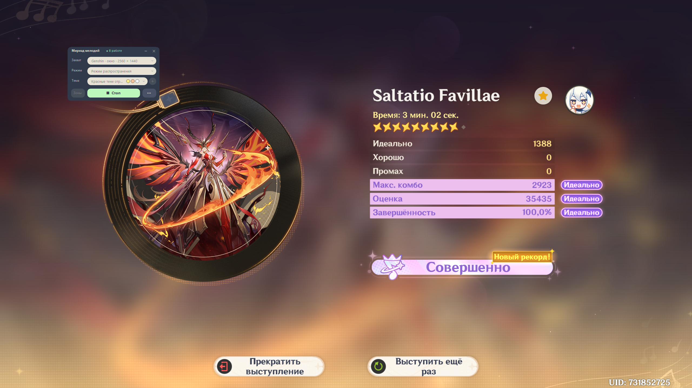
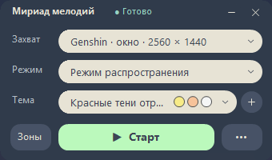
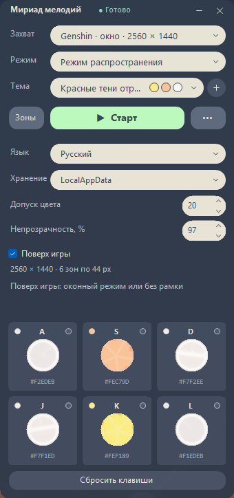

Полная версия
Работает без установки .NET.
Скачать полный EXEGenshin Impact · Windows x64 · MIT
Компактный помощник для режима «Репертуар мириад мелодий». Захватывает окно Genshin Impact, распознаёт ноты по цвету и нажимает назначенные клавиши.



Работает без установки .NET.
Скачать полный EXEТребуется .NET Desktop Runtime 10 x64.
Скачать компактный EXEWindows 10 (начиная с версии 2004) и Windows 11, только x64. Описание релиза и контрольные суммы SHA-256